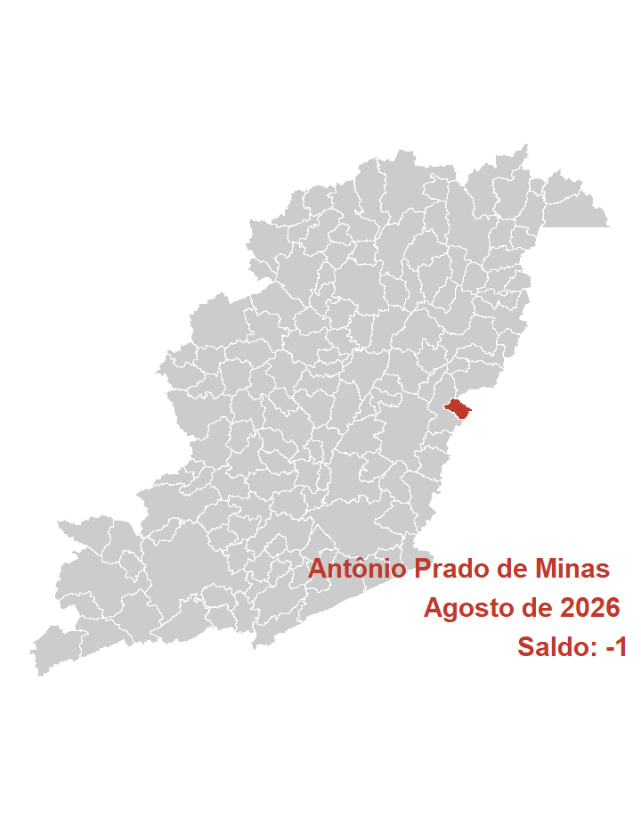
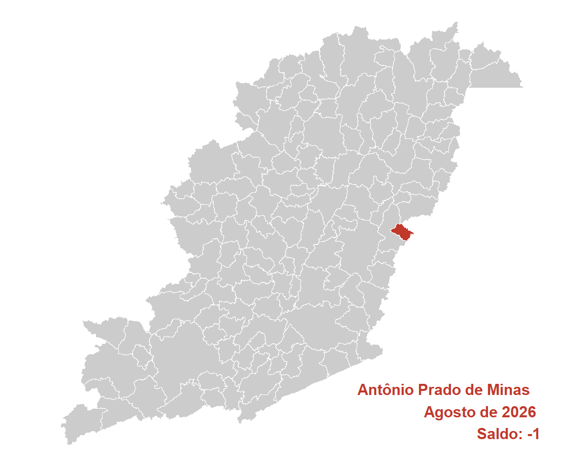

| Ano | Brasil | Estado | Mesorregião | Microrregião | Município |
|---|---|---|---|---|---|
| 2026 | 161.062 | 8.899 | 1.785 | 220 | -1 |
| 2025 | 154.574 | 1.413 | 1.830 | 242 | 2 |
| 2024 | 239.371 | 14.137 | 3.049 | 289 | 0 |
| 2022 | 288.890 | 27.099 | 2.633 | 396 | -1 |
| 2021 | 387.836 | 42.603 | 3.392 | 370 | 1 |
| 2020 | 214.631 | 23.644 | 1.601 | 100 | -1 |
| 2019 | 121.387 | 5.895 | 921 | 106 | 0 |
| 2018 | 110.431 | 4.530 | 156 | 47 | -1 |
| 2017 | 35.457 | -9.445 | -374 | 88 | -1 |
| 2016 | -33.953 | -13.121 | -500 | 85 | -2 |
| 2015 | -86.543 | -23.849 | -930 | -41 | 1 |
| 2012 | 100.938 | -2.787 | 220 | 64 | 1 |
| 2011 | 190.446 | -801 | 1.909 | 284 | 0 |
| 2010 | 299.415 | 29.253 | 1.738 | 348 | -1 |
| 2009 | 242.126 | 8.613 | 1.408 | 333 | -7 |
| 2008 | 239.124 | 19.770 | 1.581 | 350 | 3 |
| Ano | Mes | Brasil | Estado | Mesorregião | Microrregião | Município |
|---|---|---|---|---|---|---|
| 2026 | Agosto | 161.062 | 8.899 | 1.785 | 220 | -1 |
| 2026 | Julho | 56.007 | 4.383 | 595 | 110 | 3 |
| 2026 | Junho | 136.423 | 20.734 | 1.120 | 44 | 1 |
| 2026 | Maio | 81.475 | 9.772 | 129 | 0 | 3 |
| 2026 | Abril | 79.266 | 8.473 | 609 | 46 | -2 |
| 2026 | Março | 227.736 | 37.773 | 1.747 | 168 | 1 |
| 2026 | Fevereiro | 267.915 | 24.138 | 114 | -47 | 1 |
| 2026 | Janeiro | 117.725 | 7.503 | 66 | 101 | 1 |
| 2025 | Dezembro | -635.579 | -74.187 | -6.017 | -474 | 0 |
| 2025 | Outubro | 92.574 | -4.284 | 829 | 201 | -1 |
| 2025 | Agosto | 154.574 | 1.413 | 1.830 | 242 | 2 |
| 2025 | Julho | 133.787 | 3.444 | 153 | 209 | 1 |
| Acum. 2026 | 1.127.609 | 121.675 | 6.165 | 642 | 7 | |
| Acumulado 12m | 872.965 | 48.061 | 2.960 | 820 | 9 |
| CBO | Brasil | Estado | Mesorregião | Microrregião | Município |
|---|---|---|---|---|---|
| Forças armadas | 22 | 1 | NA | NA | NA |
| Poder público | -10.154 | -954 | -68 | -13 | NA |
| Ciências e artes | 20.606 | 2.050 | 191 | 31 | NA |
| Técnicos de nível médio | 18.021 | 313 | 190 | 16 | NA |
| Serviços administrativo | 26.375 | 2.965 | 252 | 31 | NA |
| Serviços e comércio | 51.228 | 6.098 | 661 | 165 | NA |
| Agropecuária | 8.752 | -7.072 | -76 | 6 | -1 |
| Bens e serviços industriais 1 | 49.084 | 5.835 | 596 | -10 | NA |
| Bens e serviços industriais 2 | -3.988 | -450 | 3 | -12 | NA |
| Reparação e manutenção | 1.116 | 113 | 36 | 6 | NA |
| CNAE | Brasil | Estado | Mesorregião | Microrregião | Município |
|---|---|---|---|---|---|
| Agropecuária/florestal | 1.438 | -7.545 | -63 | 6 | -1 |
| Extrativismo | 265 | -178 | 27 | -3 | NA |
| Indústria de transformação | 14.507 | 1.357 | 220 | 4 | NA |
| Eletricidade e gás | 1.616 | 354 | 7 | NA | NA |
| Água e esgoto | -626 | -100 | -23 | 1 | NA |
| Construção | 18.868 | 3.519 | 267 | -10 | NA |
| Comércio de automotores | 16.542 | 2.037 | 301 | 10 | NA |
| Transporte e correios | 16.423 | 1.347 | 121 | 35 | NA |
| Alojamento e alimentação | 12.309 | 1.136 | 87 | 10 | NA |
| Comunicação | 167 | 511 | 11 | 11 | NA |
| Atividades financeiras | 918 | 333 | 22 | -4 | NA |
| Imobiliárias | 637 | 66 | -1 | 1 | NA |
| Atividades científicas e técnicas | 8.279 | 893 | 23 | -24 | NA |
| Atividades administrativas | 15.637 | 1.091 | 149 | 14 | NA |
| Administração pública | 1.115 | 75 | -15 | 0 | NA |
| Educação | 25.257 | 2.527 | 173 | -1 | NA |
| Saúde e serviços sociais | 18.871 | 898 | 429 | 161 | NA |
| Artes, cultura e esportes | 1.852 | 174 | -17 | -1 | NA |
| Serviços | 7.001 | 407 | 65 | 10 | NA |
| Domésticos | -14 | -5 | NA | NA | NA |
| Organismos internacionais | -3 | NA | NA | NA | NA |
| Não classificado | 3 | 2 | 2 | NA | NA |
| Educ | Brasil | Estado | Mesorregião | Microrregião | Município |
|---|---|---|---|---|---|
| Analfabeto | 1.417 | -575 | -2 | 1 | NA |
| Até o 5º ano incompleto | 4.443 | -521 | 3 | 1 | NA |
| 5º ano completo | 265 | -900 | 0 | -8 | NA |
| 6º ano completo até o 9º ano incompleto | 2.638 | -651 | -38 | -6 | NA |
| Fundamental completo | 1.650 | -738 | -45 | 13 | NA |
| Médio incompleto | 23.466 | 2.256 | 271 | -7 | NA |
| Médio completo | 98.890 | 6.898 | 1.202 | 173 | NA |
| Superior incompleto | 5.953 | 786 | 134 | 21 | NA |
| Superior completo | 22.340 | 2.344 | 260 | 32 | -1 |
| Idade | Brasil | Estado | Mesorregião | Microrregião | Município |
|---|---|---|---|---|---|
| 10 a 14 anos | 3.319 | 485 | 42 | NA | NA |
| 15 a 17 anos | 31.206 | 4.434 | 326 | 30 | NA |
| 18 a 24 anos | 95.249 | 6.632 | 851 | 100 | NA |
| 25 a 29 anos | 14.456 | 481 | 137 | -29 | NA |
| 30 a 39 anos | 14.262 | -210 | 196 | 12 | NA |
| 40 a 49 anos | 14.485 | -29 | 311 | 74 | -1 |
| 50 a 64 anos | -3.472 | -1.856 | 16 | 37 | NA |
| 65 anos ou mais | -5.774 | -709 | -64 | 1 | NA |
| NA | -2.669 | -329 | -30 | -5 | NA |
| Raça | Brasil | Estado | Mesorregião | Microrregião | Município |
|---|---|---|---|---|---|
| Indígena | 36.538 | 1.218 | 459 | 75 | NA |
| Branca | 18.660 | 1.443 | 257 | 80 | NA |
| 3 | 115.622 | 7.424 | 1.178 | 68 | -1 |
| Preta | -157 | -166 | -20 | 0 | NA |
| 5 | 215 | 102 | -4 | 0 | NA |
| Amarela | -8.621 | -1.007 | -69 | -2 | NA |
| 9 | -1.195 | -115 | -16 | -1 | NA |
| Gênero | Brasil | Estado | Mesorregião | Microrregião | Município |
|---|---|---|---|---|---|
| Homens | 78.089 | 2.741 | 969 | 190 | -1 |
| Mulheres | 82.973 | 6.158 | 816 | 30 | NA |
| Grande_setor | Brasil | Estado | Mesorregião | Microrregião | Município |
|---|---|---|---|---|---|
| Indústria | 15.762 | 1.433 | 231 | 2 | NA |
| Construção civil | 18.868 | 3.519 | 267 | -10 | NA |
| Comércio | 16.542 | 2.037 | 301 | 10 | NA |
| Serviços | 108.449 | 9.453 | 1.047 | 212 | NA |
| Agropecuária, extrativismo vegetal,caça e pesca | 1.438 | -7.545 | -63 | 6 | -1 |
| Não classificado | 3 | 2 | 2 | NA | NA |
| Setores | Brasil | Estado | Mesorregião | Microrregião | Município |
|---|---|---|---|---|---|
| Extrativismo mineral | 265 | -178 | 27 | -3 | NA |
| Indústria de transformação | 14.507 | 1.357 | 220 | 4 | NA |
| Serviços industriais de utilidade pública | 990 | 254 | -16 | 1 | NA |
| Construção civil | 18.868 | 3.519 | 267 | -10 | NA |
| Comércio | 16.542 | 2.037 | 301 | 10 | NA |
| Serviços | 107.337 | 9.378 | 1.062 | 212 | NA |
| Adiminstração pública | 1.115 | 77 | -13 | 0 | NA |
| Agropecuária, extrativismo vegetal, caça e pesca | 1.438 | -7.545 | -63 | 6 | -1 |
| Ano | Brasil | Estado | Mesorregião | Microrregião | Município |
|---|---|---|---|---|---|
| 2002 | 28.683.913 | 3.046.362 | 285.345 | 28.070 | 101 |
| 2003 | 29.544.927 | 3.138.026 | 288.853 | 28.772 | 113 |
| 2004 | 31.407.576 | 3.332.775 | 298.898 | 29.750 | 116 |
| 2005 | 33.238.617 | 3.592.560 | 322.026 | 32.542 | 139 |
| 2006 | 32.903.959 | 3.744.043 | 337.470 | 34.652 | 142 |
| 2007 | 37.607.430 | 4.036.203 | 354.945 | 38.192 | 203 |
| 2008 | 39.441.566 | 4.184.183 | 369.202 | 39.341 | 216 |
| 2009 | 41.207.546 | 4.350.839 | 388.196 | 42.032 | 158 |
| 2010 | 44.068.355 | 4.646.891 | 408.037 | 44.049 | 197 |
| 2011 | 46.310.631 | 4.850.976 | 429.166 | 44.501 | 195 |
| 2012 | 47.458.712 | 4.928.225 | 439.074 | 44.999 | 140 |
| 2013 | 48.948.433 | 5.057.080 | 454.446 | 47.030 | 194 |
| 2014 | 49.571.510 | 5.071.906 | 456.058 | 47.869 | 188 |
| 2015 | 48.060.807 | 4.821.116 | 445.516 | 47.377 | 186 |
| 2016 | 46.060.198 | 4.628.701 | 426.384 | 44.154 | 127 |
| 2017 | 46.281.590 | 4.710.919 | 435.944 | 46.105 | 242 |
| 2018 | 46.631.115 | 4.760.830 | 436.333 | 45.291 | 208 |
| 2019 | 46.748.356 | 4.856.025 | 435.241 | 45.739 | 209 |
| 2020 | 46.236.176 | 4.814.874 | 423.457 | 43.001 | 224 |
| 2021 | 48.728.871 | 5.148.435 | 448.511 | 47.827 | 228 |
| 2022 | 52.788.939 | 5.523.279 | 476.377 | 51.121 | 269 |
| 2023 | 54.705.614 | 5.633.160 | 497.668 | 52.654 | 299 |
| 2024 | 57.789.526 | 6.094.585 | 511.827 | 53.119 | 276 |
| 2025 | 60.688.704 | 6.325.291 | 538.504 | 57.113 | 282 |
| NA | 0 | 0 | 0 | 0 | NA |
| Ano | Brasil | Estado | Mesorregião | Microrregião |
|---|---|---|---|---|
| 2002 | 0,0004 | 0,0033 | 0,0354 | 0,3598 |
| 2003 | 0,0004 | 0,0036 | 0,0391 | 0,3927 |
| 2004 | 0,0004 | 0,0035 | 0,0388 | 0,3899 |
| 2005 | 0,0004 | 0,0039 | 0,0432 | 0,4271 |
| 2006 | 0,0004 | 0,0038 | 0,0421 | 0,4098 |
| 2007 | 0,0005 | 0,0050 | 0,0572 | 0,5315 |
| 2008 | 0,0005 | 0,0052 | 0,0585 | 0,5490 |
| 2009 | 0,0004 | 0,0036 | 0,0407 | 0,3759 |
| 2010 | 0,0004 | 0,0042 | 0,0483 | 0,4472 |
| 2011 | 0,0004 | 0,0040 | 0,0454 | 0,4382 |
| 2012 | 0,0003 | 0,0028 | 0,0319 | 0,3111 |
| 2013 | 0,0004 | 0,0038 | 0,0427 | 0,4125 |
| 2014 | 0,0004 | 0,0037 | 0,0412 | 0,3927 |
| 2015 | 0,0004 | 0,0039 | 0,0417 | 0,3926 |
| 2016 | 0,0003 | 0,0027 | 0,0298 | 0,2876 |
| 2017 | 0,0005 | 0,0051 | 0,0555 | 0,5249 |
| 2018 | 0,0004 | 0,0044 | 0,0477 | 0,4593 |
| 2019 | 0,0004 | 0,0043 | 0,0480 | 0,4569 |
| 2020 | 0,0005 | 0,0047 | 0,0529 | 0,5209 |
| 2021 | 0,0005 | 0,0044 | 0,0508 | 0,4767 |
| 2022 | 0,0005 | 0,0049 | 0,0565 | 0,5262 |
| 2023 | 0,0005 | 0,0053 | 0,0601 | 0,5679 |
| 2024 | 0,0005 | 0,0045 | 0,0539 | 0,5196 |
| 2025 | 0,0005 | 0,0045 | 0,0524 | 0,4938 |
| NA | NA | NA | NA | NA |
| Ano | Brasil | Estado | Mesorregião | Microrregião | Município |
|---|---|---|---|---|---|
| 2002 | NA | NA | NA | NA | NA |
| 2003 | 3,00 | 3,01 | 1,23 | 2,50 | 11,88 |
| 2004 | 6,30 | 6,21 | 3,48 | 3,40 | 2,65 |
| 2005 | 5,83 | 7,79 | 7,74 | 9,38 | 19,83 |
| 2006 | -1,01 | 4,22 | 4,80 | 6,48 | 2,16 |
| 2007 | 14,29 | 7,80 | 5,18 | 10,22 | 42,96 |
| 2008 | 4,88 | 3,67 | 4,02 | 3,01 | 6,40 |
| 2009 | 4,48 | 3,98 | 5,14 | 6,84 | -26,85 |
| 2010 | 6,94 | 6,80 | 5,11 | 4,80 | 24,68 |
| 2011 | 5,09 | 4,39 | 5,18 | 1,03 | -1,02 |
| 2012 | 2,48 | 1,59 | 2,31 | 1,12 | -28,21 |
| 2013 | 3,14 | 2,61 | 3,50 | 4,51 | 38,57 |
| 2014 | 1,27 | 0,29 | 0,35 | 1,78 | -3,09 |
| 2015 | -3,05 | -4,94 | -2,31 | -1,03 | -1,06 |
| 2016 | -4,16 | -3,99 | -4,29 | -6,80 | -31,72 |
| 2017 | 0,48 | 1,78 | 2,24 | 4,42 | 90,55 |
| 2018 | 0,76 | 1,06 | 0,09 | -1,77 | -14,05 |
| 2019 | 0,25 | 2,00 | -0,25 | 0,99 | 0,48 |
| 2020 | -1,10 | -0,85 | -2,71 | -5,99 | 7,18 |
| 2021 | 5,39 | 6,93 | 5,92 | 11,22 | 1,79 |
| 2022 | 8,33 | 7,28 | 6,21 | 6,89 | 17,98 |
| 2023 | 3,63 | 1,99 | 4,47 | 3,00 | 11,15 |
| 2024 | 5,64 | 8,19 | 2,85 | 0,88 | -7,69 |
| 2025 | 5,02 | 3,79 | 5,21 | 7,52 | 2,17 |
| NA | -100,00 | -100,00 | -100,00 | -100,00 | NA |
| Ano | Brasil | Estado | Mesorregião | Microrregião | Município |
|---|---|---|---|---|---|
| 2002 | 0,00 | 0,00 | 0,00 | 0,00 | 0,00 |
| 2003 | 3,00 | 3,01 | 1,23 | 2,50 | 11,88 |
| 2004 | 9,50 | 9,40 | 4,75 | 5,99 | 14,85 |
| 2005 | 15,88 | 17,93 | 12,85 | 15,93 | 37,62 |
| 2006 | 14,71 | 22,90 | 18,27 | 23,45 | 40,59 |
| 2007 | 31,11 | 32,49 | 24,39 | 36,06 | 100,99 |
| 2008 | 37,50 | 37,35 | 29,39 | 40,15 | 113,86 |
| 2009 | 43,66 | 42,82 | 36,04 | 49,74 | 56,44 |
| 2010 | 53,63 | 52,54 | 43,00 | 56,93 | 95,05 |
| 2011 | 61,45 | 59,24 | 50,40 | 58,54 | 93,07 |
| 2012 | 65,45 | 61,77 | 53,87 | 60,31 | 38,61 |
| 2013 | 70,65 | 66,00 | 59,26 | 67,55 | 92,08 |
| 2014 | 72,82 | 66,49 | 59,83 | 70,53 | 86,14 |
| 2015 | 67,55 | 58,26 | 56,13 | 68,78 | 84,16 |
| 2016 | 60,58 | 51,94 | 49,43 | 57,30 | 25,74 |
| 2017 | 61,35 | 54,64 | 52,78 | 64,25 | 139,60 |
| 2018 | 62,57 | 56,28 | 52,91 | 61,35 | 105,94 |
| 2019 | 62,98 | 59,40 | 52,53 | 62,95 | 106,93 |
| 2020 | 61,19 | 58,05 | 48,40 | 53,19 | 121,78 |
| 2021 | 69,88 | 69,00 | 57,18 | 70,38 | 125,74 |
| 2022 | 84,04 | 81,31 | 66,95 | 82,12 | 166,34 |
| 2023 | 90,72 | 84,91 | 74,41 | 87,58 | 196,04 |
| 2024 | 101,47 | 100,06 | 79,37 | 89,24 | 173,27 |
| 2025 | 111,58 | 107,63 | 88,72 | 103,47 | 179,21 |
| NA | -100,00 | -100,00 | -100,00 | -100,00 | NA |
| Ano | Brasil | Estado | Mesorregião | Microrregião | Município |
|---|---|---|---|---|---|
| 2002 | 885,39 | 699,14 | 526,14 | 409,20 | 493,54 |
| 2003 | 985,30 | 783,42 | 585,15 | 471,25 | 560,97 |
| 2004 | 1.058,63 | 846,89 | 634,30 | 487,08 | 623,96 |
| 2005 | 1.135,85 | 904,05 | 685,47 | 562,30 | 695,06 |
| 2006 | 1.245,61 | 1.006,04 | 744,63 | 628,09 | 700,48 |
| 2007 | 1.301,87 | 1.065,81 | 802,71 | 675,12 | 747,54 |
| 2008 | 1.436,70 | 1.181,73 | 876,96 | 719,01 | 905,62 |
| 2009 | 1.535,74 | 1.273,12 | 963,89 | 788,85 | 940,02 |
| 2010 | 1.675,01 | 1.414,21 | 1.069,58 | 876,88 | 957,93 |
| 2011 | 1.827,45 | 1.560,35 | 1.172,93 | 951,27 | 1.192,74 |
| 2012 | 1.996,90 | 1.692,70 | 1.292,52 | 1.051,38 | 1.141,26 |
| 2013 | 2.177,60 | 1.861,57 | 1.399,74 | 1.177,13 | 1.345,24 |
| 2014 | 2.352,42 | 2.010,33 | 1.536,23 | 1.282,80 | 1.490,62 |
| 2015 | 2.541,18 | 2.165,84 | 1.645,82 | 1.399,34 | 1.557,28 |
| 2016 | 2.731,61 | 2.342,07 | 1.809,10 | 1.516,69 | 1.561,13 |
| 2017 | 2.850,41 | 2.440,03 | 1.918,43 | 1.593,62 | 1.715,15 |
| 2018 | 2.939,05 | 2.489,11 | 1.983,97 | 1.652,21 | 1.872,52 |
| 2019 | 2.921,13 | 2.495,23 | 1.953,96 | 1.680,60 | 1.945,26 |
| 2020 | 3.003,69 | 2.598,34 | 2.015,89 | 1.689,83 | 1.974,40 |
| 2021 | 3.295,76 | 2.889,99 | 2.268,66 | 1.908,71 | 2.060,22 |
| 2022 | 3.437,29 | 2.916,94 | 2.333,04 | 2.033,17 | 2.123,20 |
| 2023 | 3.383,32 | 3.022,90 | 2.472,81 | 2.309,96 | 2.483,47 |
| 2024 | 3.728,47 | 3.255,82 | 2.658,71 | 2.356,14 | 2.491,19 |
| 2025 | 3.760,69 | 3.221,18 | 2.794,52 | 2.497,20 | 2.813,57 |
| NA | NA | NA | NA | NA | NA |
| Ano | Estado | Mesorregião | Microrregião | Município |
|---|---|---|---|---|
| 2002 | 78,9650 | 59,4250 | 46,2168 | 55,7428 |
| 2003 | 79,5106 | 59,3880 | 47,8285 | 56,9339 |
| 2004 | 79,9994 | 59,9173 | 46,0103 | 58,9409 |
| 2005 | 79,5923 | 60,3491 | 49,5046 | 61,1934 |
| 2006 | 80,7669 | 59,7806 | 50,4244 | 56,2361 |
| 2007 | 81,8673 | 61,6586 | 51,8577 | 57,4206 |
| 2008 | 82,2528 | 61,0401 | 50,0460 | 63,0344 |
| 2009 | 82,8995 | 62,7641 | 51,3664 | 61,2094 |
| 2010 | 84,4297 | 63,8548 | 52,3508 | 57,1896 |
| 2011 | 85,3838 | 64,1840 | 52,0543 | 65,2678 |
| 2012 | 84,7663 | 64,7266 | 52,6508 | 57,1516 |
| 2013 | 85,4872 | 64,2790 | 54,0564 | 61,7761 |
| 2014 | 85,4578 | 65,3041 | 54,5312 | 63,3654 |
| 2015 | 85,2299 | 64,7662 | 55,0667 | 61,2817 |
| 2016 | 85,7394 | 66,2282 | 55,5236 | 57,1506 |
| 2017 | 85,6027 | 67,3036 | 55,9086 | 60,1719 |
| 2018 | 84,6910 | 67,5037 | 56,2159 | 63,7116 |
| 2019 | 85,4200 | 66,8905 | 57,5326 | 66,5929 |
| 2020 | 86,5048 | 67,1137 | 56,2584 | 65,7324 |
| 2021 | 87,6881 | 68,8357 | 57,9143 | 62,5112 |
| 2022 | 84,8615 | 67,8744 | 59,1505 | 61,7695 |
| 2023 | 89,3471 | 73,0881 | 68,2749 | 73,4034 |
| 2024 | 87,3232 | 71,3083 | 63,1932 | 66,8152 |
| 2025 | 85,6538 | 74,3088 | 66,4028 | 74,8153 |
| NA | NA | NA | NA | NA |
| Grandes.Grupos.CBO | Brasil | Estado | Mesorregião | Microrregião | Município |
|---|---|---|---|---|---|
| Membros das Forças Armadas | 0 | 0 | 0 | 0 | 0 |
| (NaN) | (NaN) | (NaN) | (NaN) | (NaN) | |
| Membros superiores do poder público, dirigentes e gerentes | 0 | 0 | 0 | 0 | 0 |
| (NaN) | (NaN) | (NaN) | (NaN) | (NaN) | |
| Profissionais das ciências e das artes | 0 | 0 | 0 | 0 | 0 |
| (NaN) | (NaN) | (NaN) | (NaN) | (NaN) | |
| Técnicos de nível médio | 0 | 0 | 0 | 0 | 0 |
| (NaN) | (NaN) | (NaN) | (NaN) | (NaN) | |
| Trabalhadores de serviços administrativos | 0 | 0 | 0 | 0 | 0 |
| (NaN) | (NaN) | (NaN) | (NaN) | (NaN) | |
| Trabalhadores dos serviços, vendedores do comércio | 0 | 0 | 0 | 0 | 0 |
| (NaN) | (NaN) | (NaN) | (NaN) | (NaN) | |
| Trabalhadores agropecuários, florestais e da pesca | 0 | 0 | 0 | 0 | 0 |
| (NaN) | (NaN) | (NaN) | (NaN) | (NaN) | |
| Trabalhadores da produção de bens e serviços industriais (1) | 0 | 0 | 0 | 0 | 0 |
| (NaN) | (NaN) | (NaN) | (NaN) | (NaN) | |
| Trabalhadores da produção de bens e serviços industriais (2) | 0 | 0 | 0 | 0 | 0 |
| (NaN) | (NaN) | (NaN) | (NaN) | (NaN) | |
| Trabalhadores em serviços de reparação e manutenção | 0 | 0 | 0 | 0 | 0 |
| (NaN) | (NaN) | (NaN) | (NaN) | (NaN) | |
| Não classificados | 0 | 0 | 0 | 0 | 0 |
| (NaN) | (NaN) | (NaN) | (NaN) | (NaN) |
| CNAE | Brasil | Estado | Mesorregião | Microrregião | Município |
|---|---|---|---|---|---|
| Agropecuária/florestal | 0 | 0 | 0 | 0 | 0 |
| (NaN) | (NaN) | (NaN) | (NaN) | (NaN) | |
| Extrativismo | 0 | 0 | 0 | 0 | 0 |
| (NaN) | (NaN) | (NaN) | (NaN) | (NaN) | |
| Indústria de transformação | 0 | 0 | 0 | 0 | 0 |
| (NaN) | (NaN) | (NaN) | (NaN) | (NaN) | |
| Eletricidade e gás | 0 | 0 | 0 | 0 | 0 |
| (NaN) | (NaN) | (NaN) | (NaN) | (NaN) | |
| Água e esgoto | 0 | 0 | 0 | 0 | 0 |
| (NaN) | (NaN) | (NaN) | (NaN) | (NaN) | |
| Construção | 0 | 0 | 0 | 0 | 0 |
| (NaN) | (NaN) | (NaN) | (NaN) | (NaN) | |
| Comércio de automotores | 0 | 0 | 0 | 0 | 0 |
| (NaN) | (NaN) | (NaN) | (NaN) | (NaN) | |
| Transporte e correios | 0 | 0 | 0 | 0 | 0 |
| (NaN) | (NaN) | (NaN) | (NaN) | (NaN) | |
| Alojamento e alimentação | 0 | 0 | 0 | 0 | 0 |
| (NaN) | (NaN) | (NaN) | (NaN) | (NaN) | |
| Comunicação | 0 | 0 | 0 | 0 | 0 |
| (NaN) | (NaN) | (NaN) | (NaN) | (NaN) | |
| Atividades financeiras | 0 | 0 | 0 | 0 | 0 |
| (NaN) | (NaN) | (NaN) | (NaN) | (NaN) | |
| Imobiliárias | 0 | 0 | 0 | 0 | 0 |
| (NaN) | (NaN) | (NaN) | (NaN) | (NaN) | |
| Atividades científicas e técnicas | 0 | 0 | 0 | 0 | 0 |
| (NaN) | (NaN) | (NaN) | (NaN) | (NaN) | |
| Atividades administrativas | 0 | 0 | 0 | 0 | 0 |
| (NaN) | (NaN) | (NaN) | (NaN) | (NaN) | |
| Administração pública | 0 | 0 | 0 | 0 | 0 |
| (NaN) | (NaN) | (NaN) | (NaN) | (NaN) | |
| Educação | 0 | 0 | 0 | 0 | 0 |
| (NaN) | (NaN) | (NaN) | (NaN) | (NaN) | |
| Saúde e serviços sociais | 0 | 0 | 0 | 0 | 0 |
| (NaN) | (NaN) | (NaN) | (NaN) | (NaN) | |
| Artes, cultura e esportes | 0 | 0 | 0 | 0 | 0 |
| (NaN) | (NaN) | (NaN) | (NaN) | (NaN) | |
| Serviços | 0 | 0 | 0 | 0 | 0 |
| (NaN) | (NaN) | (NaN) | (NaN) | (NaN) | |
| Domésticos | 0 | 0 | 0 | 0 | 0 |
| (NaN) | (NaN) | (NaN) | (NaN) | (NaN) | |
| Organismos internacionais | 0 | 0 | 0 | 0 | 0 |
| (NaN) | (NaN) | (NaN) | (NaN) | (NaN) | |
| Não classificados | 0 | 0 | 0 | 0 | 0 |
| (NaN) | (NaN) | (NaN) | (NaN) | (NaN) |
| Escolaridade | Brasil | Estado | Mesorregião | Microrregião | Município |
|---|---|---|---|---|---|
| Analfabeto | 0 | 0 | 0 | 0 | 0 |
| (NaN) | (NaN) | (NaN) | (NaN) | (NaN) | |
| Até o 5º ano incompleto | 0 | 0 | 0 | 0 | 0 |
| (NaN) | (NaN) | (NaN) | (NaN) | (NaN) | |
| 5º ano completo | 0 | 0 | 0 | 0 | 0 |
| (NaN) | (NaN) | (NaN) | (NaN) | (NaN) | |
| 6º ao 9º ano incompleto | 0 | 0 | 0 | 0 | 0 |
| (NaN) | (NaN) | (NaN) | (NaN) | (NaN) | |
| Fundamental completo | 0 | 0 | 0 | 0 | 0 |
| (NaN) | (NaN) | (NaN) | (NaN) | (NaN) | |
| Médio incompleto | 0 | 0 | 0 | 0 | 0 |
| (NaN) | (NaN) | (NaN) | (NaN) | (NaN) | |
| Médio completo | 0 | 0 | 0 | 0 | 0 |
| (NaN) | (NaN) | (NaN) | (NaN) | (NaN) | |
| Superior incompleto | 0 | 0 | 0 | 0 | 0 |
| (NaN) | (NaN) | (NaN) | (NaN) | (NaN) | |
| Superior completo | 0 | 0 | 0 | 0 | 0 |
| (NaN) | (NaN) | (NaN) | (NaN) | (NaN) | |
| Não classificados | 0 | 0 | 0 | 0 | 0 |
| (NaN) | (NaN) | (NaN) | (NaN) | (NaN) |
| Faixas.Etárias | Brasil | Estado | Mesorregião | Microrregião | Município |
|---|---|---|---|---|---|
| 10 a 14 anos | 0 | 0 | 0 | 0 | 0 |
| (NaN) | (NaN) | (NaN) | (NaN) | (NaN) | |
| 15 a 17 anos | 0 | 0 | 0 | 0 | 0 |
| (NaN) | (NaN) | (NaN) | (NaN) | (NaN) | |
| 18 a 24 anos | 0 | 0 | 0 | 0 | 0 |
| (NaN) | (NaN) | (NaN) | (NaN) | (NaN) | |
| 25 a 29 anos | 0 | 0 | 0 | 0 | 0 |
| (NaN) | (NaN) | (NaN) | (NaN) | (NaN) | |
| 30 a 39 anos | 0 | 0 | 0 | 0 | 0 |
| (NaN) | (NaN) | (NaN) | (NaN) | (NaN) | |
| 40 a 49 anos | 0 | 0 | 0 | 0 | 0 |
| (NaN) | (NaN) | (NaN) | (NaN) | (NaN) | |
| 50 a 64 anos | 0 | 0 | 0 | 0 | 0 |
| (NaN) | (NaN) | (NaN) | (NaN) | (NaN) | |
| 65 anos ou mais | 0 | 0 | 0 | 0 | 0 |
| (NaN) | (NaN) | (NaN) | (NaN) | (NaN) | |
| Não classificados | 0 | 0 | 0 | 0 | 0 |
| (NaN) | (NaN) | (NaN) | (NaN) | (NaN) |
| Raça | Brasil | Estado | Mesorregião | Microrregião | Município |
|---|---|---|---|---|---|
| Indígena | 0 | 0 | 0 | 0 | 0 |
| (NaN) | (NaN) | (NaN) | (NaN) | (NaN) | |
| Branco | 0 | 0 | 0 | 0 | 0 |
| (NaN) | (NaN) | (NaN) | (NaN) | (NaN) | |
| Preto | 0 | 0 | 0 | 0 | 0 |
| (NaN) | (NaN) | (NaN) | (NaN) | (NaN) | |
| Amarelo | 0 | 0 | 0 | 0 | 0 |
| (NaN) | (NaN) | (NaN) | (NaN) | (NaN) | |
| Pardo | 0 | 0 | 0 | 0 | 0 |
| (NaN) | (NaN) | (NaN) | (NaN) | (NaN) | |
| Não classificados | 0 | 0 | 0 | 0 | 0 |
| (NaN) | (NaN) | (NaN) | (NaN) | (NaN) |
| Gênero | Brasil | Estado | Mesorregião | Microrregião | Município |
|---|---|---|---|---|---|
| Masculino | 0 | 0 | 0 | 0 | 0 |
| (NaN) | (NaN) | (NaN) | (NaN) | (NaN) | |
| Feminino | 0 | 0 | 0 | 0 | 0 |
| (NaN) | (NaN) | (NaN) | (NaN) | (NaN) |
| Grandes.Setores | Brasil | Estado | Mesorregião | Microrregião | Município |
|---|---|---|---|---|---|
| Indústria | 0 | 0 | 0 | 0 | 0 |
| (NaN) | (NaN) | (NaN) | (NaN) | (NaN) | |
| Construção civil | 0 | 0 | 0 | 0 | 0 |
| (NaN) | (NaN) | (NaN) | (NaN) | (NaN) | |
| Comércio | 0 | 0 | 0 | 0 | 0 |
| (NaN) | (NaN) | (NaN) | (NaN) | (NaN) | |
| Serviços | 0 | 0 | 0 | 0 | 0 |
| (NaN) | (NaN) | (NaN) | (NaN) | (NaN) | |
| Agropecuária, extrativismo vegetal, caça e pesca | 0 | 0 | 0 | 0 | 0 |
| (NaN) | (NaN) | (NaN) | (NaN) | (NaN) | |
| Não classificados | 0 | 0 | 0 | 0 | 0 |
| (NaN) | (NaN) | (NaN) | (NaN) | (NaN) |
| Setores | Brasil | Estado | Mesorregião | Microrregião | Município |
|---|---|---|---|---|---|
| Extrativismo mineral | 0 | 0 | 0 | 0 | 0 |
| (NaN) | (NaN) | (NaN) | (NaN) | (NaN) | |
| Indústria de transformação | 0 | 0 | 0 | 0 | 0 |
| (NaN) | (NaN) | (NaN) | (NaN) | (NaN) | |
| Serviços industriais de utilidade pública | 0 | 0 | 0 | 0 | 0 |
| (NaN) | (NaN) | (NaN) | (NaN) | (NaN) | |
| Construção civil | 0 | 0 | 0 | 0 | 0 |
| (NaN) | (NaN) | (NaN) | (NaN) | (NaN) | |
| Comércio | 0 | 0 | 0 | 0 | 0 |
| (NaN) | (NaN) | (NaN) | (NaN) | (NaN) | |
| Serviços | 0 | 0 | 0 | 0 | 0 |
| (NaN) | (NaN) | (NaN) | (NaN) | (NaN) | |
| Administração pública | 0 | 0 | 0 | 0 | 0 |
| (NaN) | (NaN) | (NaN) | (NaN) | (NaN) | |
| Agropecuária, extrativismo vegetal, caça e pesca | 0 | 0 | 0 | 0 | 0 |
| (NaN) | (NaN) | (NaN) | (NaN) | (NaN) | |
| Não classificados | 0 | 0 | 0 | 0 | 0 |
| (NaN) | (NaN) | (NaN) | (NaN) | (NaN) |
| Grandes Grupos CBO | Brasil | Estado | Mesorregião | Microrregião | Município |
|---|---|---|---|---|---|
| Membros das Forças Armadas | 0 | 0 | 0 | 0 | 0 |
| Membros superiores do poder público, dirigentes e gerentes | 0 | 0 | 0 | 0 | 0 |
| Profissionais das ciências e das artes | 0 | 0 | 0 | 0 | 0 |
| Técnicos de nível médio | 0 | 0 | 0 | 0 | 0 |
| Trabalhadores de serviços administrativos | 0 | 0 | 0 | 0 | 0 |
| Trabalhadores dos serviços, vendedores do comércio | 0 | 0 | 0 | 0 | 0 |
| Trabalhadores agropecuários, florestais e da pesca | 0 | 0 | 0 | 0 | 0 |
| Trabalhadores da produção de bens e serviços industriais (1) | 0 | 0 | 0 | 0 | 0 |
| Trabalhadores da produção de bens e serviços industriais (2) | 0 | 0 | 0 | 0 | 0 |
| Trabalhadores em serviços de reparação e manutenção | 0 | 0 | 0 | 0 | 0 |
| Não classificados | 0 | 0 | 0 | 0 | 0 |
| CNAE | Brasil | Estado | Mesorregião | Microrregião | Município |
|---|---|---|---|---|---|
| Agropecuária/florestal | 0 | 0 | 0 | 0 | 0 |
| Extrativismo | 0 | 0 | 0 | 0 | 0 |
| Indústria de transformação | 0 | 0 | 0 | 0 | 0 |
| Eletricidade e gás | 0 | 0 | 0 | 0 | 0 |
| Água e esgoto | 0 | 0 | 0 | 0 | 0 |
| Construção | 0 | 0 | 0 | 0 | 0 |
| Comércio de automotores | 0 | 0 | 0 | 0 | 0 |
| Transporte e correios | 0 | 0 | 0 | 0 | 0 |
| Alojamento e alimentação | 0 | 0 | 0 | 0 | 0 |
| Comunicação | 0 | 0 | 0 | 0 | 0 |
| Atividades financeiras | 0 | 0 | 0 | 0 | 0 |
| Imobiliárias | 0 | 0 | 0 | 0 | 0 |
| Atividades científicas e técnicas | 0 | 0 | 0 | 0 | 0 |
| Atividades administrativas | 0 | 0 | 0 | 0 | 0 |
| Administração pública | 0 | 0 | 0 | 0 | 0 |
| Educação | 0 | 0 | 0 | 0 | 0 |
| Saúde e serviços sociais | 0 | 0 | 0 | 0 | 0 |
| Artes, cultura e esportes | 0 | 0 | 0 | 0 | 0 |
| Serviços | 0 | 0 | 0 | 0 | 0 |
| Domésticos | 0 | 0 | 0 | 0 | 0 |
| Organismos internacionais | 0 | 0 | 0 | 0 | 0 |
| Não classificados | 0 | 0 | 0 | 0 | 0 |
| Escolaridade | Brasil | Estado | Mesorregião | Microrregião | Município |
|---|---|---|---|---|---|
| Analfabeto | 0 | 0 | 0 | 0 | 0 |
| Até o 5º ano incompleto | 0 | 0 | 0 | 0 | 0 |
| 5º ano completo | 0 | 0 | 0 | 0 | 0 |
| 6º ao 9º ano incompleto | 0 | 0 | 0 | 0 | 0 |
| Fundamental completo | 0 | 0 | 0 | 0 | 0 |
| Médio incompleto | 0 | 0 | 0 | 0 | 0 |
| Médio completo | 0 | 0 | 0 | 0 | 0 |
| Superior incompleto | 0 | 0 | 0 | 0 | 0 |
| Superior completo | 0 | 0 | 0 | 0 | 0 |
| Faixas Etárias | Brasil | Estado | Mesorregião | Microrregião | Município |
|---|---|---|---|---|---|
| 10 a 14 anos | 0 | 0 | 0 | 0 | 0 |
| 15 a 17 anos | 0 | 0 | 0 | 0 | 0 |
| 18 a 24 anos | 0 | 0 | 0 | 0 | 0 |
| 25 a 29 anos | 0 | 0 | 0 | 0 | 0 |
| 30 a 39 anos | 0 | 0 | 0 | 0 | 0 |
| 40 a 49 anos | 0 | 0 | 0 | 0 | 0 |
| 50 a 64 anos | 0 | 0 | 0 | 0 | 0 |
| 65 anos ou mais | 0 | 0 | 0 | 0 | 0 |
| Não classificados | 0 | 0 | 0 | 0 | 0 |
| Raça | Brasil | Estado | Mesorregião | Microrregião | Município |
|---|---|---|---|---|---|
| Indígena | 0 | 0 | 0 | 0 | 0 |
| Branco | 0 | 0 | 0 | 0 | 0 |
| Preto | 0 | 0 | 0 | 0 | 0 |
| Amarelo | 0 | 0 | 0 | 0 | 0 |
| Pardo | 0 | 0 | 0 | 0 | 0 |
| Não classificados | 0 | 0 | 0 | 0 | 0 |
| Gênero | Brasil | Estado | Mesorregião | Microrregião | Município |
|---|---|---|---|---|---|
| Masculino | 0 | 0 | 0 | 0 | 0 |
| Feminino | 0 | 0 | 0 | 0 | 0 |
| Grandes Setores | Brasil | Estado | Mesorregião | Microrregião | Município |
|---|---|---|---|---|---|
| Indústria | 0 | 0 | 0 | 0 | 0 |
| Construção civil | 0 | 0 | 0 | 0 | 0 |
| Comércio | 0 | 0 | 0 | 0 | 0 |
| Serviços | 0 | 0 | 0 | 0 | 0 |
| Agropecuária, extrativismo vegetal, caça e pesca | 0 | 0 | 0 | 0 | 0 |
| Não classificados | 0 | 0 | 0 | 0 | 0 |
| Setores | Brasil | Estado | Mesorregião | Microrregião | Município |
|---|---|---|---|---|---|
| Extrativismo mineral | 0 | 0 | 0 | 0 | 0 |
| Indústria de transformação | 0 | 0 | 0 | 0 | 0 |
| Serviços industriais de utilidade pública | 0 | 0 | 0 | 0 | 0 |
| Construção civil | 0 | 0 | 0 | 0 | 0 |
| Comércio | 0 | 0 | 0 | 0 | 0 |
| Serviços | 0 | 0 | 0 | 0 | 0 |
| Administração pública | 0 | 0 | 0 | 0 | 0 |
| Agropecuária, extrativismo vegetal, caça e pesca | 0 | 0 | 0 | 0 | 0 |
| Não classificados | 0 | 0 | 0 | 0 | 0 |